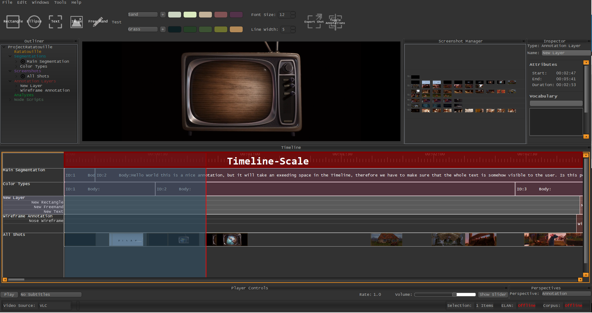

Creating Segments¶
There are several ways to create Segments in VIAN, depending on your Use-Case you may choose one of the following:
- Time Slice Dragging allows you to define a start and an end-point of the new segment.
- Fast Segmentation will automatically create a new Segment from the last segments end, to your current time location.
- Interval Selection allows to define a start and an end-point with an infinite number of actions in between.
Time Slice Dragging¶
- In the Timeline, click on the name of the Segmentation you want to add a Segment to.
- The Segmentation should now be highlighted with a steel-blue color.
- On the Timeline-Scale, Right-Press and drag (while holding the the Right Button down) from the segment start to the Segment end and Release.
- In the appearing Context Menu, choose New Segment.
Note
Options
- Name, how the template should appear in the “New Project Dialog”
- Include, which entities of your project should be exported.

{kind=link}
The Export Template Dialog
Fast Segmentation¶
- In the Timeline, click on the name of the Segmentation you want to add a Segment to.
- The Segmentation should now be highlighted with a steel-blue color.
- On the Timeline-Scale, Right-Click onto the end Position of your new Segment.
- In the appearing Context Menu, choose New Segment.
Note
Alternatively, one can create a new Segment using the Main Menu by triggering:
Tools/Add Segment
{kind=link}
Interval Selection¶
- In the Timeline, click on the name of the Segmentation you want to add a Segment to.
- The Segmentation should now be highlighted with a steel-blue color.
- Navigate to the start point of your segment.
- Press Ctrl + Q to set a start-point. A new green line should appear.
- Navigate to the end-point of your Segment.
- Press Ctrl + W to finish up the new Segment